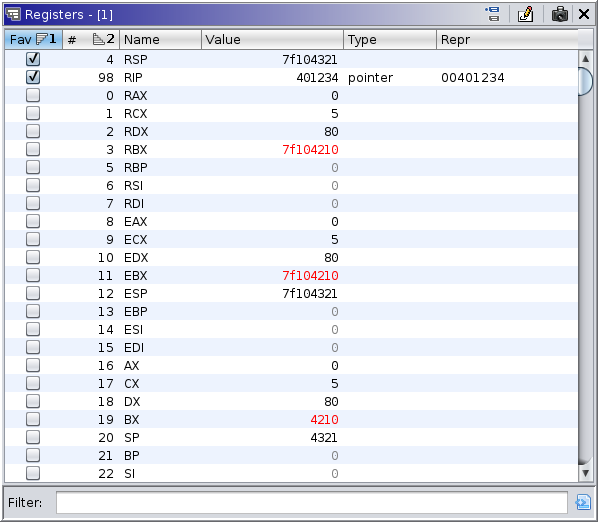
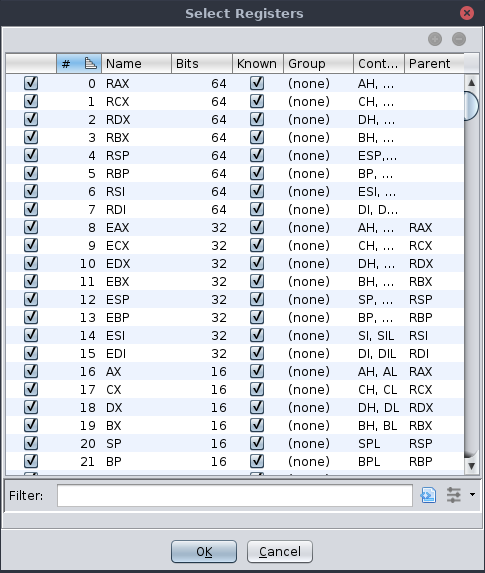

|  |
Registers refer to the target processor's register banks. In multi-threaded environments, it is assumed that each thread has its own register context. The register window presents a subset of registers for the current thread understood by both the target and Ghidra's language model for the target processor. It permits for the selection, organization, display, search, modification, and analysis of the registers and values.
The table displays information about registers, including their values and types. It has the following columns:
The register window provides the following actions:
This displays a dialog for selecting which registers to display in the table.
|  |
The dialog provides more information about each register, potentially displays a larger set of registers, and permits the precise selection of registers to include in the window. This varies from using the table filter in that the register window will not query the target for a register unless it is selected. Note that deselecting a register does not prohibit other components from reading that register. For example, the program counter and stack pointer are read by the recorder whether or not they're displayed in the table. The actions allow for the addition and subtraction of selections from the register set. Most columns are self-explanatory or duplicate the same column in the main window. The "Known" column indicates whether Ghidra was able to find the same register on the target. Unknown registers are never populated by the recorder, but they can still be populated by the user. Modifying the values of unknown registers cannot affect the target. Register sets are memorized per compiler specification.
This toggle is a write protector for live registers. To modify live register values, this toggle must be enabled, and the trace must be live and "at the present." Note that editing recorded historical values is not permitted via the UI, regardless of this toggle, but can be accomplished via scripts.
This button is analogous to the "snapshot" action of other Ghidra windows. It generates a copy of this window. The copy will no longer follow the current thread, but it will follow the current time.
The register window uses colors to hint about the state of registers and their values. They can be configured in the tool's options. By default, changed registers are displayed in red, and stale registers are displayed in dark grey. A "stale" register is one whose current value is not known. The value displayed is the last recorded value or the default value 0. Simply, a "changed" register is one whose value has just changed. For example, if a register is modified as result of stepping, then that register is changed. However, given the possibility of rewinding, changing thread focus, etc., "changed" is actually subtly more flexible. The registers window remembers the user's last coordinates (time, thread, frame, etc.) as well as the current coordinates. So, "changed" more precisely refers to a register whose value differs between those two coordinates. This permits the user to switch focus between different coordinates and quickly identify what is different, so long as those coordinates pertain to the same processor language.